Sistemas expertos · PUCE Manabí
Una red ve si hay fisura. Un sistema experto, con ACI y NEC, dice qué hacer con ella.
Hernández · Márquez · Sornoza
Ing. Gómez Bravo Josselyn · 2026
Por qué existe
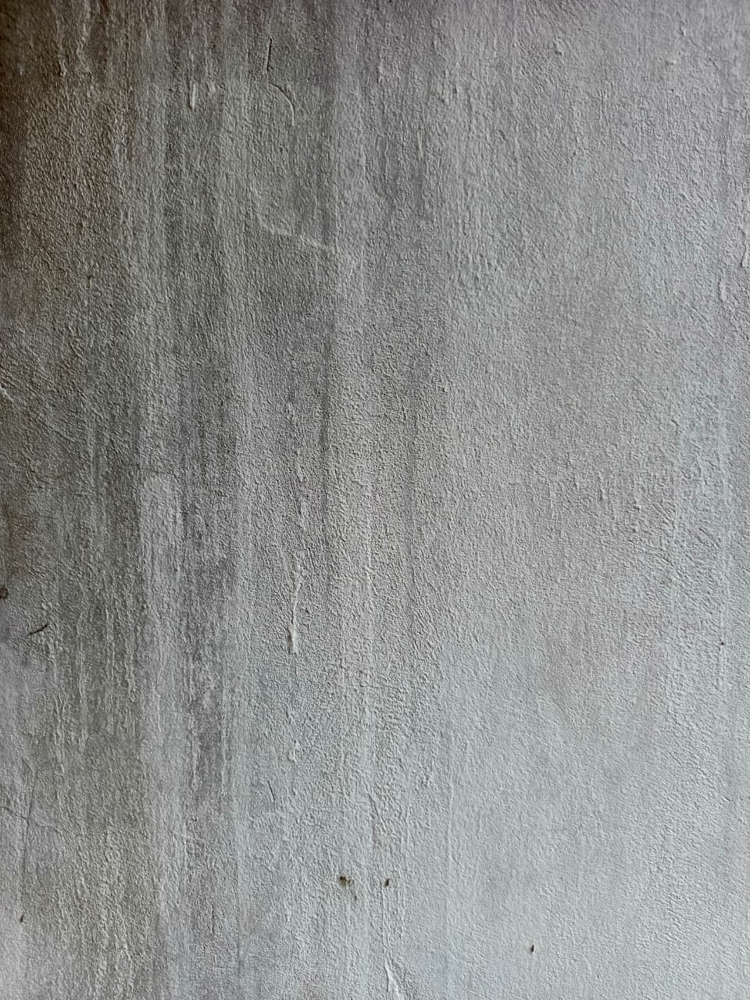
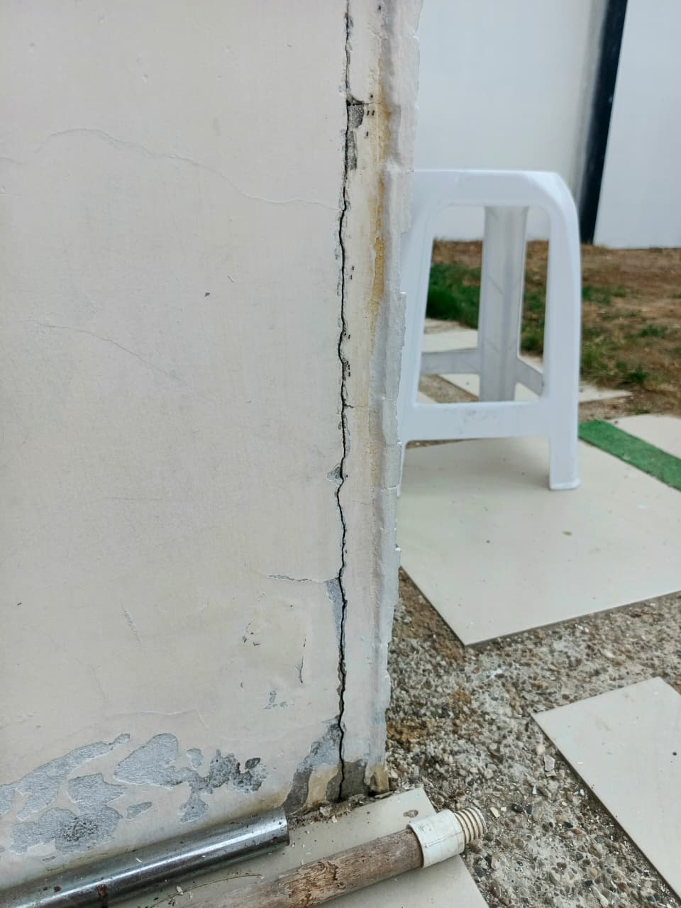
La idea
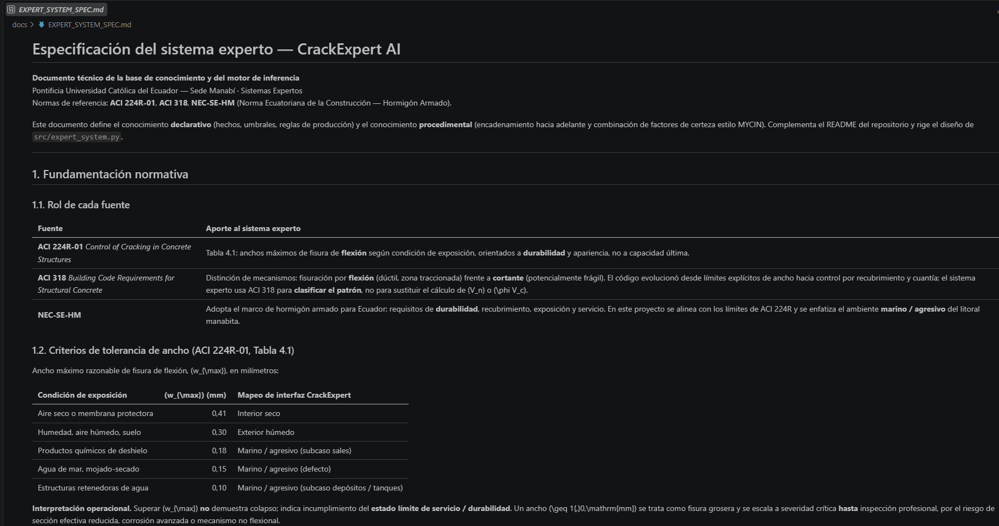
Cómo corre una foto
JPG o PNG, 224×224. Una visita guarda varias tomas del mismo lugar.
P(fisura). Si es menor a 0,50, se acaba: no hay grieta visual.
Vertical, horizontal, inclinada o malla. El inspector puede corregir.
Elemento, ambiente y 9 cartas. «No lo sé» no inventa hechos.
Severidad, mecanismo, plan y certeza MYCIN. Alerta, no peritaje.
Los datos
| Partición | Pos / Neg | Rol |
|---|---|---|
| Train 70 % | 2.800 / 2.800 | Flip, rotación, zoom, brillo |
| Val 15 % | 600 / 600 | EarlyStopping sobre val_loss |
| Test 15 % | 600 / 600 | Evaluación ciega, sin augmentation |
Özgenel / Kaggle. Parches de campus universitario. Etiqueta: hay fisura o no.
No hay milímetros ni mecanismo. Por eso el experto vive aparte.
Machine learning
| Modelo | De dónde sale | Fine-tuning | Parámetros | Peso | En test |
|---|---|---|---|---|---|
| CNN personalizada | Desde cero, 3 bloques | Red completa | 110.561 | 1,3 MB | 2 FN · la de la app |
| MobileNetV2 | ImageNet | 25 capas | 2,26 M | 19,5 MB | 0 errores en Kaggle |
| EfficientNet-B0 | ImageNet | 20 capas | 4,05 M | 26,5 MB | 1 falso positivo |
| ResNet50V2 | ImageNet | 20 capas | 23,6 M | 151 MB | 2 FP · 22,7 ms |
La red que se despliega
def build_cnn_custom():
x = Rescaling(1/255)(inputs)
for f in (32, 64, 128):
x = Conv2D(f, 3, padding="same")(x)
x = BatchNormalization()(x)
x = Activation("relu")(x)
x = MaxPooling2D(2)(x)
x = Dropout(0.25)(x)
x = Dense(128, "relu")(GAP(x))
return Dense(1, "sigmoid")(x)Entrenamiento
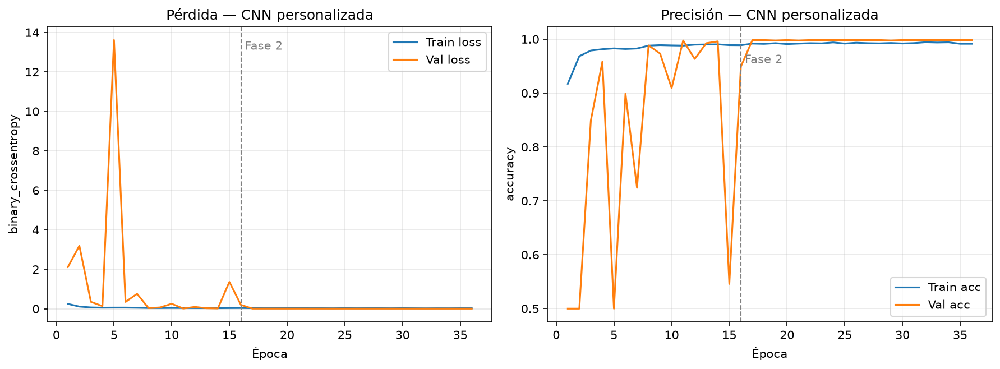
Las otras tres
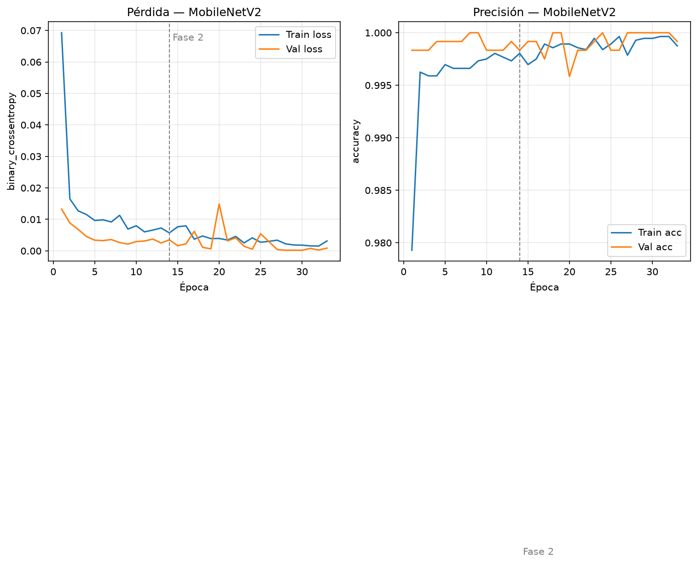
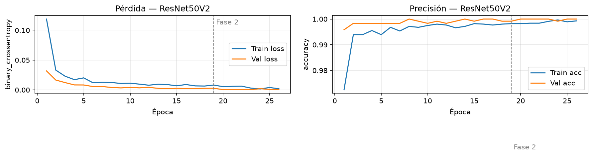
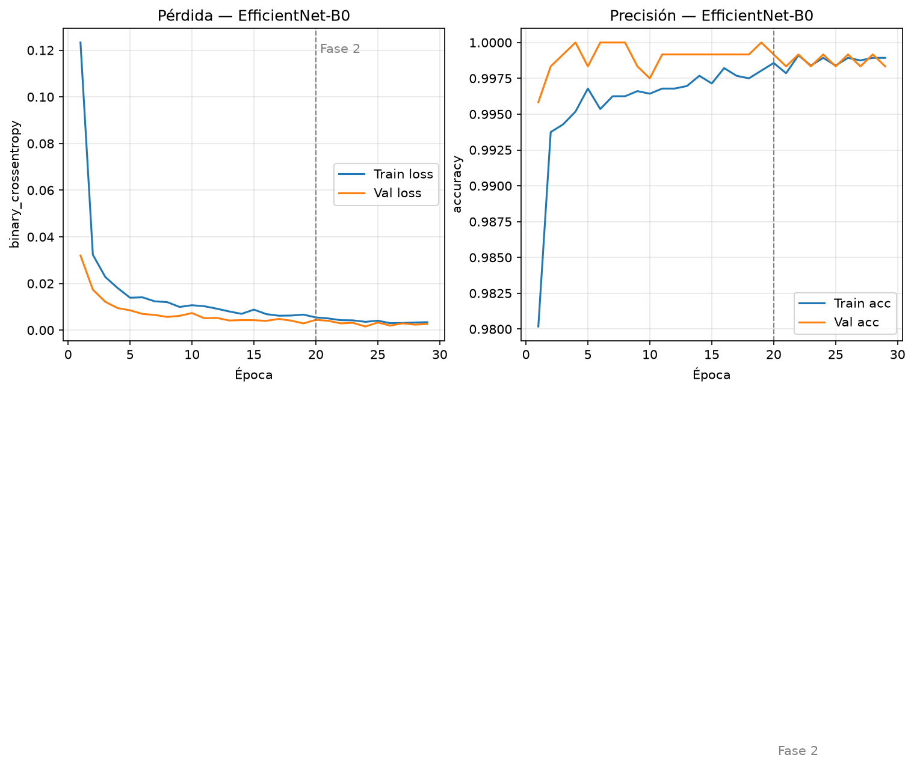
Test Kaggle · 1.200 imágenes
| Modelo | Acc | Prec | Recall | F1 | AUC | Lectura |
|---|---|---|---|---|---|---|
| CNN | 0,9983 | 1,0000 | 0,9967 | 0,9983 | 1,0000 | 2 fisuras no vistas |
| MobileNetV2 | 1,0000 | 1,0000 | 1,0000 | 1,0000 | 1,0000 | Ganador de esta tabla |
| ResNet50V2 | 0,9983 | 0,9967 | 1,0000 | 0,9983 | 1,0000 | 2 sanas como fisura |
| EfficientNet | 0,9992 | 0,9983 | 1,0000 | 0,9992 | 1,0000 | 1 falso positivo |
Dónde se equivoca cada red
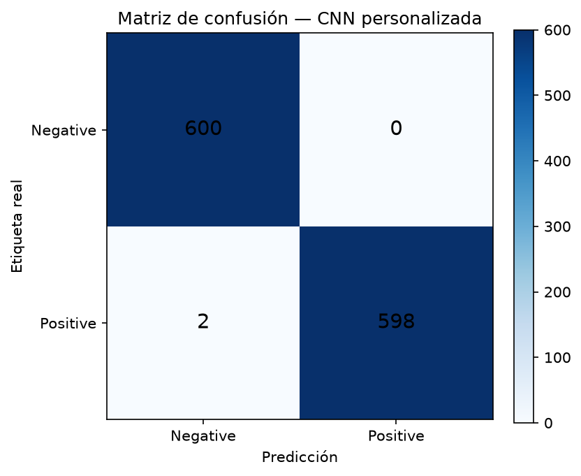
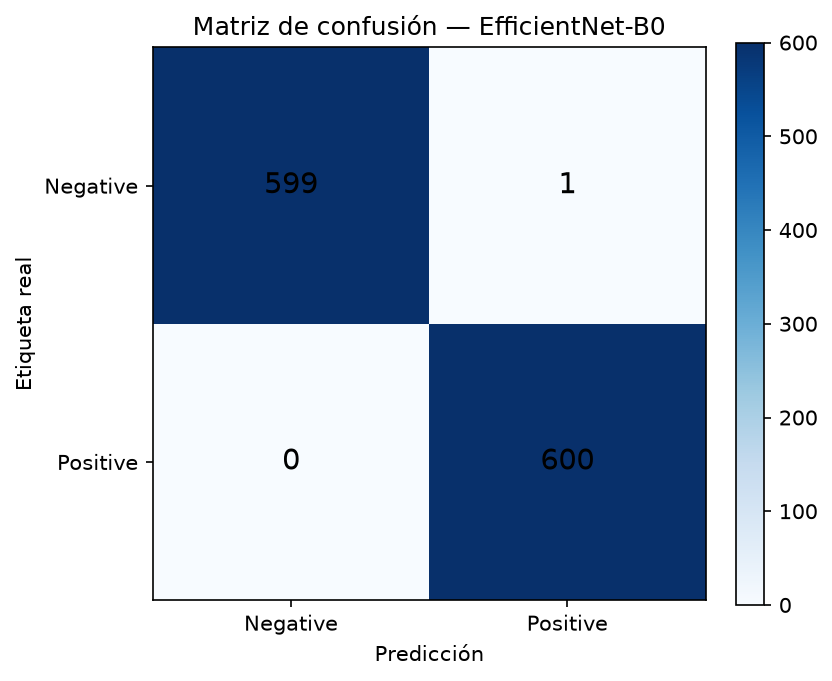
Separación y costo
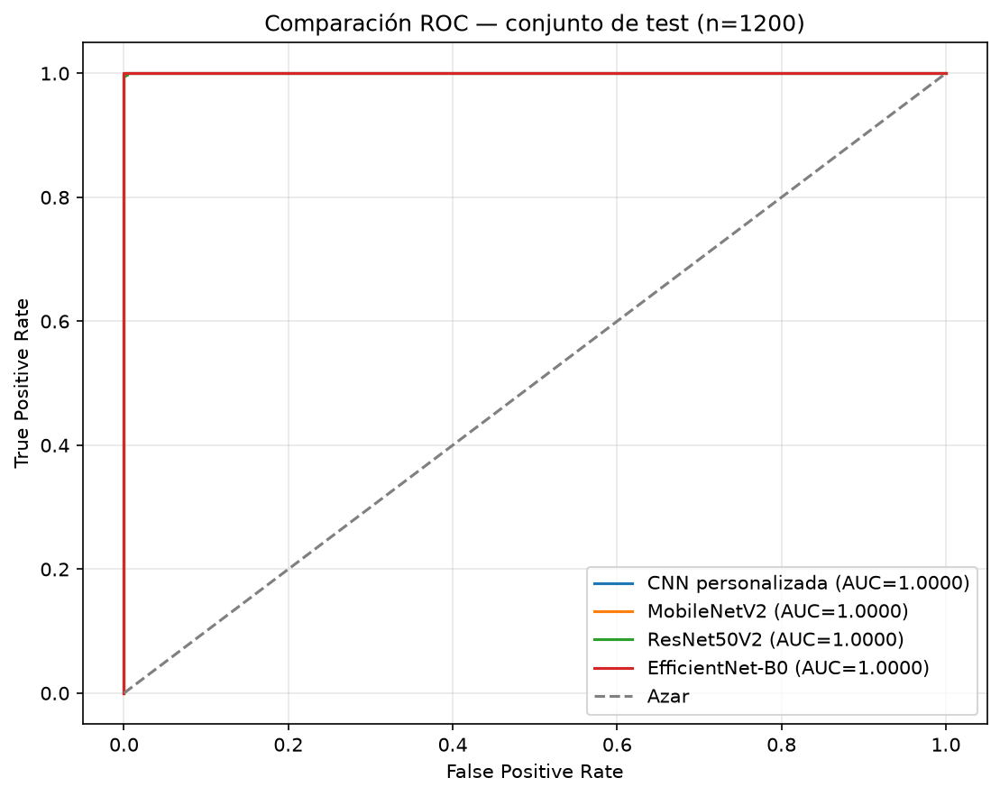
La más rápida. La de la app.
Perfecta en Kaggle.
Un falso positivo.
Demasiado cara para el celular.
El hallazgo
Cero errores en 1.200 parches de campus.
Deja dos de cada tres fisuras reales.
77 fotos reales
| Modelo | Acc | Prec | Rec | F1 |
|---|---|---|---|---|
| CNN | 0,377 | 0,350 | 0,700 | 0,467 |
| MobileNet | 0,325 | 0,238 | 0,333 | 0,278 |
| EfficientNet | 0,234 | 0,204 | 0,333 | 0,253 |
| ResNet | 0,234 | 0,061 | 0,067 | 0,063 |
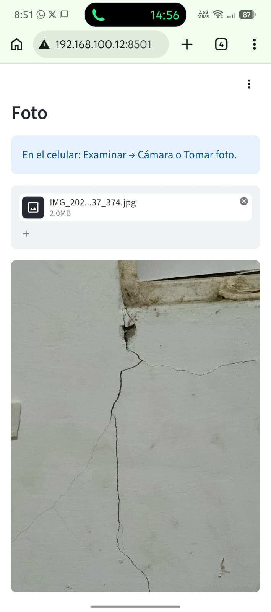
Por qué falla en campo
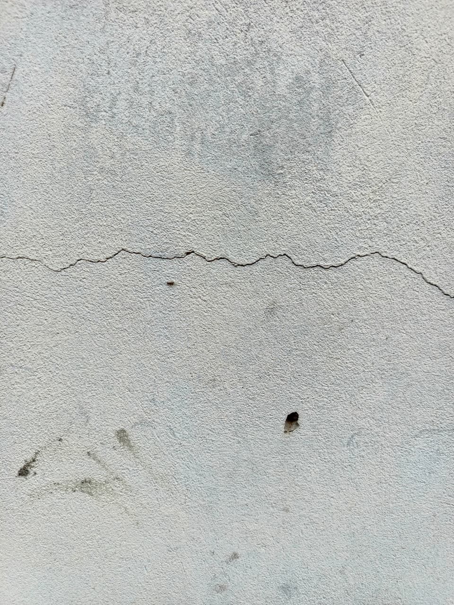
Sistema experto
Anchos máximos de fisura de flexión según exposición. Durabilidad, no colapso.
El patrón visual mapea a mecanismo: flexión, cortante, columna, corrosión.
Hormigón armado en Ecuador. Ambiente marino del litoral manabita.
Conocimiento
| Ambiente en la app | wmax |
|---|---|
| Interior seco | 0,41 mm |
| Exterior húmedo | 0,30 mm |
| Marino / agresivo | 0,15 mm |
| Fisura grosera | ≥ 1,0 mm → crítica |
| Si se ve… | Mecanismo | Típico |
|---|---|---|
| Diagonal 45° | Cortante | Crítica |
| Vertical en columna | Compresión | Moderada |
| Horizontal en columna | Sismo / viento | Crítica |
| Malla | Retracción | Leve |
| Paralela al acero | Corrosión | Moderada |
En campo no se pide el ancho: se marca evidencia incompleta. OpenCV no ve helicoidal.
Inferencia
R0 — P < 0,50 → no hay fisura visual.
R1 — P ≥ 0,50 → hay fisura, arranca en leve.
R6b — sin milímetros → no se inventa el ancho.
R-P1 — diagonal en apoyos → cortante crítica.
R-P7 — paralela al acero → corrosión.
P = 0,50 no aporta. P = 0,92 da CF 0,84.
CFcomb = CFa + CFb(1 − CFa)Gana la severidad más grave. «No lo sé» no dispara la regla.
Si la CNN ve fisura
¿Dónde está? Apoyo, medio, junta
¿Una sola o varias en red?
¿Hay humedad, goteo o mancha?
¿Óxido o se cae el concreto?
¿Hace cuánto la notaste?
¿Hubo un temblor reciente?
¿Hay pisos o carga arriba?
¿Crece o está igual?
¿Pasa al otro lado?
En el teléfono
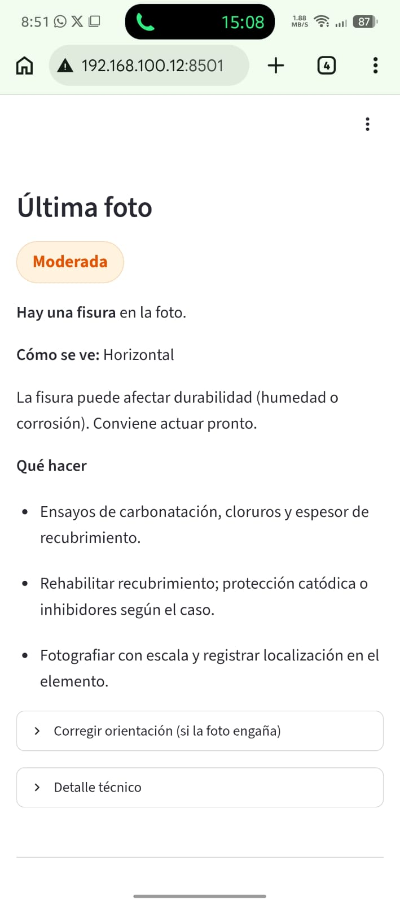
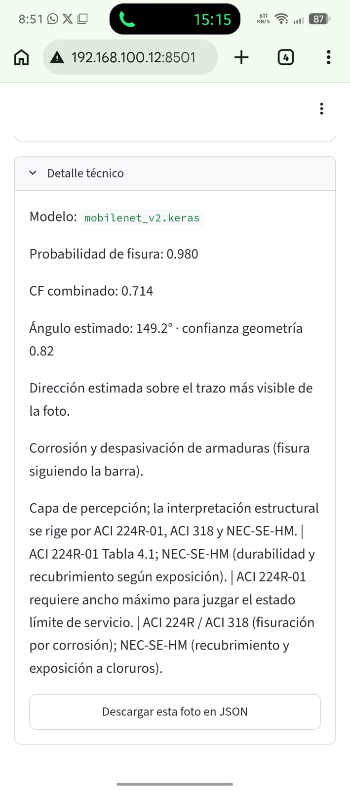
Están conectados
def diagnose(ml_probability, *, elemento, ambiente,
patron_orientacion, ancho_mm=None,
field_answers=None):
obs = observation_from_form(...)
return evaluate_pathology(obs)
# Foto → P_ML → OpenCV → experto → JSON
# models/cnn_custom.keras1. Alta de visita.
2. Foto + viga/columna/losa/muro + ambiente.
3. Si hay fisura, las nueve cartas.
4. Dictamen y bitácora en este equipo.
Si falta el modelo, la app se detiene. Si cambia una regla ACI, el dictamen cambia sin reentrenar.
Para llevar
F1 ≥ 0,998 in-domain. En celular gana la CNN, no MobileNet.
ACI, NEC, patrón, nueve cartas y MYCIN. La red no opina de patología.
PML, orientación, dictamen y JSON en el mismo teléfono.
Fuentes y alcance
ACI 224R-01 · ACI 318 · NEC-SE-HM
Özgenel y Sorguç · Surface Crack Detection Dataset · Kaggle
TensorFlow/Keras · OpenCV · scikit-learn · Streamlit
Test Kaggle: n=1.200 · OOD: n=77 (30 Positive / 47 Negative)
Resultados y figuras: reports/
La app es un apoyo académico a la inspección; no sustituye un peritaje estructural.
Gracias
Visión y sistema experto para fisuras en hormigón armado.
Hernández · Márquez · Sornoza · PUCE Sede Manabí